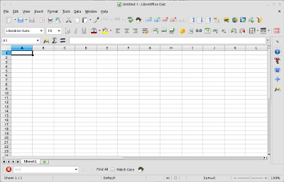

|
When you click the install button all listed applications are going to be installed on your system. You can use the software manager to install them separately. |
|
| LibreOffice | |
|
SolydXK comes with the LibreOffice suite pre-installed. Its stability and features works great for most people and especially for businesses. However, if you are missing some features or you want LibreOffice to stay updated you can install LibreOffice from the backports repository. Backports are recompiled new packages for the current stable environment. So, they will run without new libraries. Although you can run more up to date software using the backports repository, you introduce a greater risk of breakage doing so. |
 |
| Homepage: https://www.libreoffice.org | |